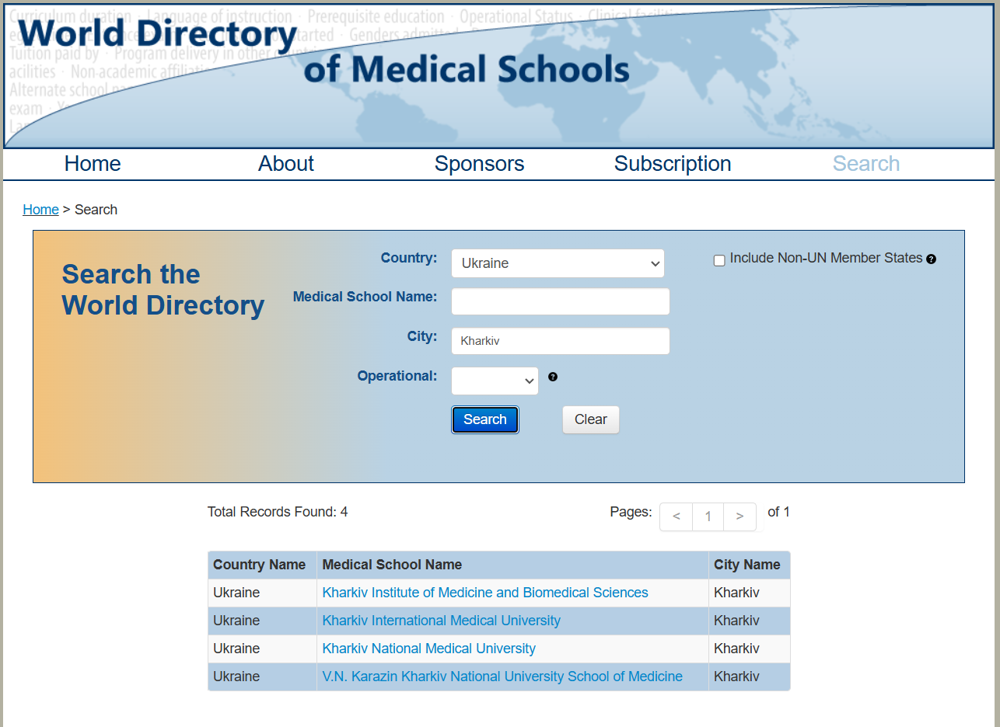

-
UA

- ENG
Перша публікація: 01 жовт. 2024
Дата останньої редакції: 10 серп. 2025
 Lindøy, Norge - Sep 2023
Lindøy, Norge - Sep 2023
Підтвердженням вашої медичної освіти займається Міністерство Охорони Здоровʼя Норвегії (Helsedirektoratet).
Перший крок, потрібно впевнитись, що медичний університет, який ви закінчили визнаний організацією World Directory of Medical Schools.

Якщо все окей, то далі йде подача документів в американську компанію ECFMG EPIC. Вони відправляють запит до вашого університету, для підтвердження того, що ви там дійсно навчались. Після відповіді, вони відправляють звіт до Helsedirektoratet. Це займає приблизно 2 місяці. Одночасно з EPIC, ви можете відправити документи до Helsedirektoratet. Оскільки там час очікування 13 місяців.
Коли вам затверджують освіту, то ви отримуєте тимчасову ліцензію, яка дозволяє працювати під наглядом іншого лікаря. Вона діє 3 роки.
Ліцензія має наступний вигляд:
За цей час вам необхідно виконати 3 вимоги:
Коли ви виконаєте всі 3 вимоги, ви отримуєте право на проходження LIS1 (Lege i spesialisering). Це як інтернатура у нас, тільки тут вона оплачується та триває 18 місяців: 12 місяців в sykehus (велика лікарня) та 6 місяців в legekontor (кабінет лікаря-терпевта).
Виконання всіх трьох вимог розширяє ваші можливості з пошуку роботи, адже тепер ви зможете отримуєте авторизацію, яка діє набагато довше та можете співпрацювати з vikarbyrå, як legevikar.
Інтернатура та спеціалізація, яку ви мали в Україні не має ніякого значення, оскільки в Норвегії її не підтверджують.
Отримання робочого контракту та перехід на робочу візу в Норвегії з тимчасовою ліцензією
Після отримання тимчасової ліцензії, ви маєте право переходу на візу спеціаліста. Для цього необхідний робочий контракт, зі ставкою не меньше, як 80%. Робочий контракт повинен бути тільки за лікарняною спеціальністю, тобто ви не можете отримати робочу візу з контрактом hjelpepleier. Заява подається через UDI, з прикріпленням робочого контракту та тимчасової ліцензії. Час очікування до 3 місяців.
Коли ви кидаєте søknad на роботу, то важливо мати як мінімум 2 реферанси і один з них від enhetsleder. Реферанси - це люди, які можуть описати вас як людину, ваші здібності та робочі завдання, які ви виконували. Що б їх отримати, лікарі, перед відправлянням søknad на работу, проходять hospitering. Це коли ви відвідуєте відділення на протязі 2-3 місяців та вивчаєте, як працює система охорони здоров’я в Норвегії. Для цього потрібно писати на пошту відділення з запитом про можливість проходження у них hospitering. Під час проходження hospitering ви маєте право на проживання в будинку від лікарні. Після закінчення просите дозволу у enhetsleder та лікаря до якого ви були прив’язані, що б майбутній роботодавець міг їм зателефонувати та спитати за вас.
Перша робота з якої починає більшість лікарів, які приїхали в Норвегію не з країни ЄС/ЄЕЗ - це lege før turnus, lege med lisens, LIS 2/3.
Які є найбільш реалістичні варіанти для отримання контракту з 3-річною ліцензією і подальшим переходом на робочу візу:
Для подальшого збільшення шансів на отримання місця в LIS1 необхідний досвід праці в sykehus, на посаді LIS2/3. Так, тимчасова ліцензія дає право на роботу рівня лікаря спеціаліста 2-3 року. В подальшому досвід праці в sykehus в різноманітних відділеннях матиме велике значення під час подачі заявки на проходження LIS1.
Важливо також знати, що ви можете подавати søknad на LIS1, але варто мати на увазі, що перед початком практики в legekontor, потрібно мати авторизацію (виконати 3 умови від helsedirektoratet).
Група взаємодопомоги для лікарів з України в Норвегії - https://t.me/+j1COwUXBqUJjOWVi
Корисні посилання:
World Directory of Medical Schools